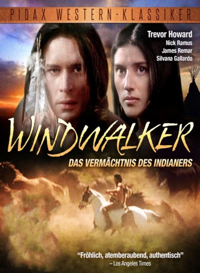

#2892 Windwalker - Das Vermächtnis des Indianers
Alternativ: Windwalker
 
 IMDB-Wertung: 7.0 / 10
IMDB-Wertung: 7.0 / 10  Metascore: 0
Metascore: 0 
An ancient Indian warrior who has reached the end of his life is brought back from his 'death' to save his family from a raiding party of enemy Indians in this unique story of 'Indians without a single cowboy.'
Jahr: 1980
Dauer: 108 Minuten
FSK: 12
Land: USA Studio: Pacific International EnterprisesTonspuren: DD2.0 - ,
Untertitel: Englisch,
Auflösung: 1080p (1440x1080) Größe: 9072 MB
Genre: Drama, Abenteuer, Western
Regisseur: Kieth Merrill
Drehbuch: Ray Goldrup, Blaine Yorgason, Blaine Yorgason
Soundtrack: Merrill B. Jenson
Darsteller:
 Trevor Howard als Windwalker
Trevor Howard als Windwalker James Remar als Windwalker as a young man
James Remar als Windwalker as a young man- Jason Stevens als Horse That Follows
 Rudy Diaz als Crow Eyes
Rudy Diaz als Crow Eyes Billy Drago als Crow Scout
Billy Drago als Crow Scout- Nick Ramus als Smiling Wolf / Crow Brother / Narrator
- Serene Hedin als Tashina
- Dusty McCrea als Dancing Moon
- Silvana Gallardo als Little Feather
- Emerson John als Spotted Deer
- Roberta Deherrera als Happy Wind
- Ivan Naranjo als Crooked Leg
- Chief Tug Smith als Tashina's father
- Fredelia Smith als Tashina's mother
- Wanni-Omni-Ska-Robideau als Windwalker, age 5
- Dominque Gallegos als Tashina, age 5
- Jason Tahbo als Crow Brother, age 5
- Benjamin Huber als Smiling Wolf, age 2
- David Huber als Crow Brother, age 2
- Harold Goss-Coyote als Crow Hair
- Marvin Takes Horse als Young Crow Eyes
- Roy J. Cohoe als Wounded Crow
Datei: X:\HD-Western-1980-1999\Windwalker - Das Vermächtnis des Indianers (1980, FSK12, 1440x1080).mkv seit 29.12.2015
Festplatte: HD Eastern+Western
 Es gibt insgesamt 29 Filme in der Gruppe 'HD-Western-1980-1999'
Es gibt insgesamt 29 Filme in der Gruppe 'HD-Western-1980-1999'